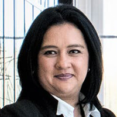

Accuracy is
What Matters
In 1993 I founded Accuracy Accounting with one goal in mind, I wanted to build an Accounting Firm that people could trust in and depend on to handle their finances. As a young accountant I built my firm on real face to face relationships with clients. At Accuracy we want to get to know you, your family, or your company. Our team of specialist will create a plan that fits your needs and your budget. It is my hope that here at Accuracy Accounting we can help your family or business thrive.
Sincerely,

Alexandria Lozano
Founder, Former CEO
Our Story
Accuracy Accounting & Financial was founded in 1993 by Alexandria Lozano in a 1,200 sqft strip mall rental space. Alexandria was just 24, right out of Arizona State University, at the time. She hired 4 of her college friends to work at her small accounting firm. A year later her accounting firm was serving over 200 local families and was beginning to catch the attention of local small businesses. In 1995 Accuracy landed a huge client, Arizona Public Service. Accuracy put a huge financial plan in place that saved Arizonans thousands of dollars in electricity bills and boosted APS's revenue by over 20%. By 2005 Accuracy was the largest Accounting and Financial firm in the state of Arizona with clients like Costco and Dairy Queen. In 2008, Alexandria stepped down as CEO, and was replaced by Maureen McRae the former CFO. By 2010, Accuracy was serving over 100 Fortune 500 companies. In 2019 Accuracy Accounting & Financial is the second largest Accounting and Financial firm in the nation.

Donald Ericson
CPA, Auditing Specialist
Once a freelance CPA, Donald Ericson built a reputation by completing audits for large corporations. His clients include Walmart, Exxon-Mobile and many other large companies.
He has a wealth of experience in auditing companies both large and small. He now leads our auditing team at Accuracy Accounting. As our auditing specialist he personally oversees each audit our firm completes.
Get Auditing Help

Natalia Flores
CPA, Tax Specialist
Natalia Flores is young ambitious Harvard Graduate who joined our team after leaving a small tax settlement firm she founded herself while in college.
She leads our team of tax specialist at Accuracy Accounting. Her wealth of experience has helped over a thousand companies, big and small, take advantage of huge tax discounts.
Get Tax Help

Alexandria Lozano
Former CEO, CPA,
Sales Report Specialist
Alexandria Lozano is the founder of Accuracy Accounting. She founded the firm in 1993 after graduating from Arizona State University. In 2008 she stepped down from her role as CEO in order to spend more time with her family.
Alexandria still heads the Sales Reporting team at Accuracy Accounting and oversees each report that we prepare.
Get Sales Help

Daisy Sanchez
CPA, Business Payroll Manager
At age 20, Daisy founded her first startup where she acted as both CEO and CFO. After realizing her love of accounting, she switch her major at Yale University to Accounting
Daisy now leads the payroll services department at Accuracy. She also maintains her role as CEO of her educational tech startup while raising a family of five.
Get Payroll Help

Melinda May
CPA, Bookkeeping Specialist
Melinda was the owner of a major hedge fund corporation which she sold in order to pursue her dream of starting a business. After successfully running a business for 6 years, she sold her company for over $28 million.
After retiring at 30, Melinda took up a leadership position as our Bookkeeping Team Manager. Her vast leadership experience skills give her an edge over others in the field.
Get Bookkeeping Help

David carson
JD, CPA, Business Law Specialist
David was left as an orphan at age 10. In high school he worked his way to the top of his class, and put himself through college with scholarships. He attended Harvard Law School where he obtained his MS in Business Law.
He now heads our Business and Legal Department at Accuracy Accounting. David is an accomplished lawyer and talented accountant.
Get Business Help

 As a startup educational firm we weren't really finance experts. I needed a team backing me that knew what they were doing. When I hired Accuracy I had a great feeling about them and as I began to work with them that feeling only got better. Accuracy has been there every step of the way helping us build our dream into a reality.
As a startup educational firm we weren't really finance experts. I needed a team backing me that knew what they were doing. When I hired Accuracy I had a great feeling about them and as I began to work with them that feeling only got better. Accuracy has been there every step of the way helping us build our dream into a reality.